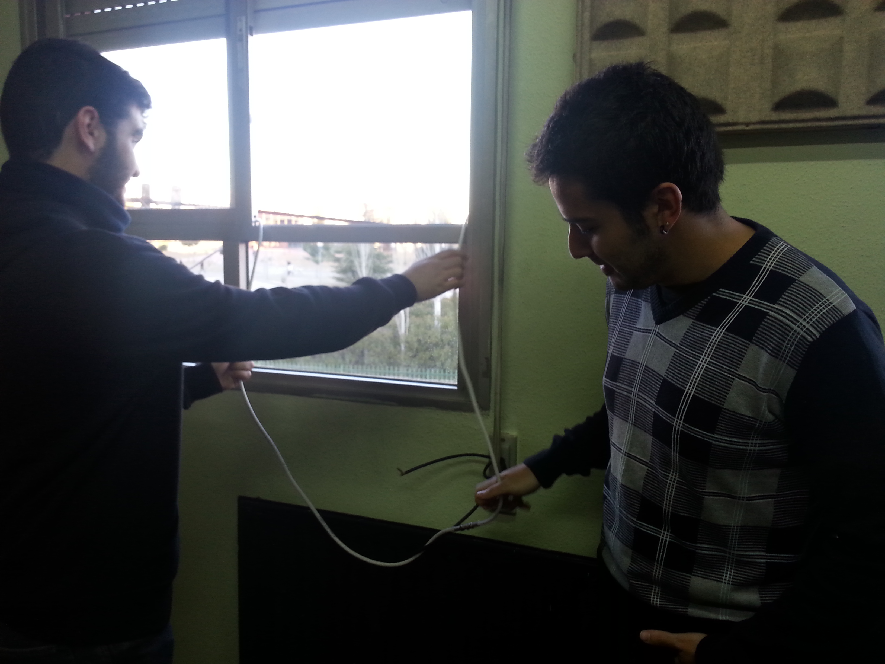
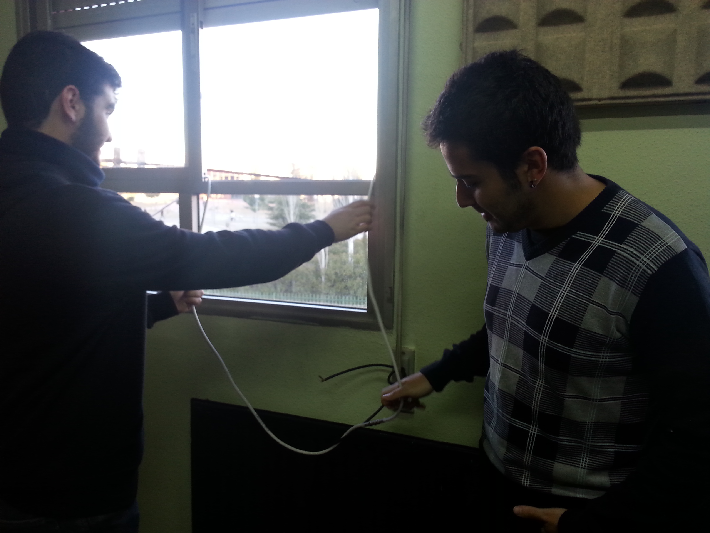

Hogar Digital
2º STI
IES Benjamin Rua

 



El objetivo es programar una aplicación de control Bluetooth para Android mediante la herramienta MIT APP INVENTOR 2.
Montar un circuito con el módulo de comunicación Bluetooth eb-101 que controlará un dimmer de iluminación (Un control de intensidades de luz en una lámpara).
Conseguir que la aplicación Android y el modulo Bluetooth se comuniquen correctamente para así poder controlar el dimmer desde un móvil, Tablet, etc… (Cualquier dispositivo con sistema operativo Android).
Primero enlazamos, mediante bluetooth, el modulo eb-101 y el dispositivo Android para poder ejecutar la aplicación que hemos programado con Google App Inventor 2.
Gracias a la aplicación programada, podremos controlar nuestro dimmer que está conectado mediante Bluetooth a nuestro teléfono móvil. Las órdenes serían las siguientes:
Las intensidades están ordenadas de menor intensidad. Es decir, la intensidad 1 es la que menos luz produce.
Al accionar una de las cuatro intensidades en la aplicación, esta manda la orden correspondiente al módulo eb-101, este los recibe y los transmite en serie el PIC que se encargara de la conversión de estos bits paralelos y los entregara a las conexiones del dimmer que, dependiendo de la combinación de bits, se iluminará con una determinada intensidad.